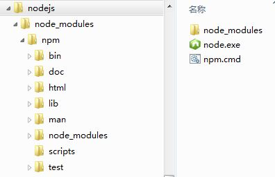
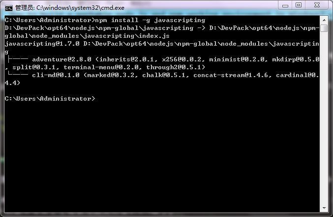
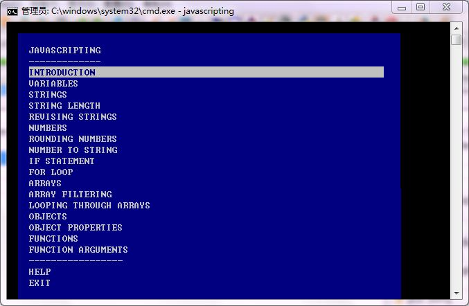

本文目标是在 Windows 的非系统盘（甚至是U盘和移动硬盘）中搭建一个便携的 node.js 及 npm 的工作环境（例如，部署在目录 D:\DevPack\opt64\nodejs 下），这样重装系统时就不用备份数据，也可以放在移动存储设备上随身带着。
提示：请严格按照我的步骤来做，否则出现问题了后果自负哦:)
下载 node.js 官方 Windows 版程序
前往官方网站： http://nodejs.org/#download 下载 .exe 可执行文件（就是个单一文件 nodejs.exe），放到目录 D:\DevPack\opt64\nodejs 下，并将该目录添加进环境变量 PATH 中，便于在任意位置执行该程序。关于修改完 PATH 变量如何使其立即生效，可参阅我的另一篇文章： 如何在 Windows7 系统不重启或注销的情况下使环境变量的修改立即全局生效
下载 npm 官方 Windows 版程序
前往 http://nodejs.org/dist/npm/ 下载一份已经编译好的 npm 包（只下载 zip 格式的即可），我下载时上面最新的是 1.4.12 版。将其解压到路径 D:\DevPack\opt64\nodejs 下，目录结构如下：

到这里，一个基本可用的工作环境就搭建好了，可以打开一个 cmd 命令行窗口，运行 node -v 和 npm -v，输出了版本号，就表示 OK 了。
配置 npm 全局模块的存放路径以及cache的路径
在用 npm install 安装模块时，如果附带一个 -g 参数，就表示将该模块安装到全局模块（默认路径是： %APPDATA%\Roming\npm\），而在安装模块时所下载的一些依赖包等缓存文件就都保存在目录 %APPDATA%\Roaming\npm-cache 下。
为了实现便携的目的，有必要将这两个目录全部设定到 D:\DevPack\opt64\nodejs 下。设定方法有两个。
方法一
运行以下两个命令：
1 2 | npm config set prefix "D:\DevPack\opt64\nodejs\npm-global"
npm config set cache "D:\DevPack\opt64\nodejs\npm-cache"
|
运行完后，在你的 %HOMEPATH% 下面会出现一个名为 .npmrc 的文件，将其重命名为 npmrc，并移动到目录 D:\DevPack\opt64\nodejs\node_modules\npm 下。
方法二
直接在 D:\DevPack\opt64\nodejs\node_modules\npm 目录下新建一个 npmrc 文件，并写入以下内容并保存：
1 2 | prefix = D:\DevPack\opt64\nodejs\npm-global
cache = D:\DevPack\opt64\nodejs\npm-cache
|
更新 npm
完成以上配置之后，就可以运行命令 npm install -g npm 更新 npm 到最新版本，或者运行命令 npm install -g npm@版本号 更新 npm 到指定版本。
更新完后，将路径 D:\DevPack\opt64\nodejs\npm-global 添加到 PATH 环境变量中，并且放在 D:\DevPack\opt64\nodejs 的前面。再在命令行中运行 npm -v，可以看到 npm 的版本号变了（笔者写此文时是2.1.9版）。
还要新建一个环境变量，名称为 NODE_PATH，值为 D:\DevPack\opt64\nodejs\npm-global\npm_modules，最后把文件 D:\DevPack\opt64\nodejs\node_modules\npm\npmrc 复制一份到 D:\DevPack\opt64\nodejs\npm-global\node_modules\npm 下。
测试
至此，一个便携的最新版 node.js & npm 工作环境就建好了。我们来测试一下。运行命令 npm install -g javascripting，可以看到如下界面，表示安装成功了：

运行 javascripting 命令，可以看到如下界面：

可以开始学习 Javascript 了。
要卸载 javascripting，只需运行 npm remove javascripting -g 即可。